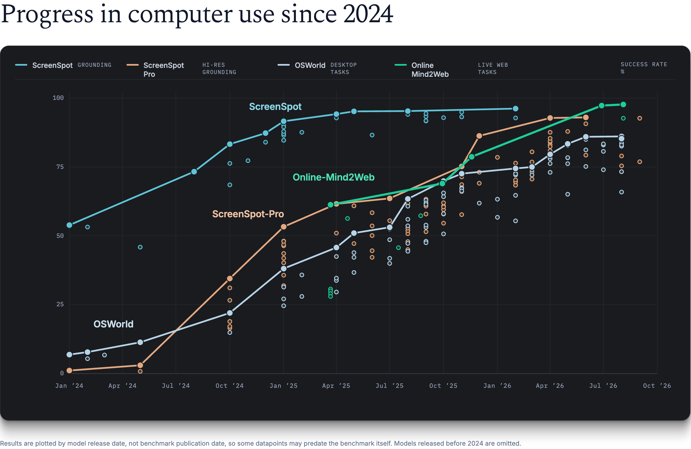

The Other Hand
tldr: GUI-only agents are over; the future is an agent with two hands: coding is one, computer use is the other.
What progress actually looked like
Two years ago, if you asked a model to pick your departure date, there was a good chance it would click a day early, a day late, or a month off. Sometimes it would, confidently, open the return-date picker. Basically, it was trying to make sure you never left the ground.
So the research started with the smallest useful unit of computer use: given an instruction and a screenshot, click the right thing. We first measured this across desktop, web, and mobile, then extended the same test to high-resolution professional software, where the target might be a tiny icon among dozens in a CAD toolbar. It was the right place to start. If the model can't click the right thing, nothing else matters.
Around the same time, we started testing complete tasks across desktop applications and the live web. An agent might need to find a setting buried several menus deep, gather information from a few websites and organize it in a spreadsheet, or find a hotel for four that meets several constraints and figure out the fastest route from there to the airport. Most of these take a person several to tens of minutes. The longest take hours, when there is a lot to search or a lot of repetitive work.
Clicking accurately was no longer enough. The agent had to carry the goal across many steps, remember what it found early and use it later, keep track of what was done and what wasn't, deal with slow or changing pages, pop-ups, and the occasional bot check, notice when an action failed and recover from it, verify that important actions such as purchases actually went through, and keep trying until the task was done.

For a while, the sentiment was that computer use was moving slowly. Within two years, these problems are effectively solved.
So what's left?
The Other Hand
The obvious answer is longer tasks. More steps, more hours. An agent that clicks for longer.
I think this is the wrong answer, because it assumes that the agent should do the task the way a human does it, through a screen.
But that is not the best way to get real work done. Think of a task like reviewing an insurance claim. An agent doing it well might pull the claim history with a database query, run the standard checks from the command line, flag any anomaly to a human reviewer through the case-management API, and push the approved claim through a legacy portal if no API is available. Code, CLI, API, and GUI, all in one task.
The future is unified agents with two hands: coding is one, computer use is the other. Solving real work well often requires more than one interface, switching among them fluently and choosing the right one for each step.
So GUI-only agents are over, but GUIs are not. Much software still has no API, and it will take a long time until it does (or never will). Until then, the GUI remains the generalization guarantee.
Training both hands together
It is not enough to optimize coding and computer use separately.
For a long time, that is how it was done. Not separate models, necessarily, but separate teams, separate data, separate action spaces, separate benchmarks. This worked. Most of what makes an agent good at long tasks transferred from coding to computer use, and I would guess general agent training and computer-use-specific work contributed about equally to where computer use is today.
What does not transfer is the switch. As soon as agents are measured on tasks where any interface is allowed, the errors show up. Some models keep coding when a short GUI path exists, just slightly hidden. Some click through hundreds of steps that a slightly creative script would have replaced. Some churn between interfaces without meaningful progress on either. They can code. They can click. They can't choose.
Choosing has to be trained, and it can only be trained where it matters. If a task can be finished through one interface, the model learns nothing about when to reach for the other, no matter how many such tasks it sees. What we need are realistic knowledge-work environments that naturally require both hands.
That is the data. The rest is where computer use sits in the overall training stack. You have probably seen the GPT-6 Astra examples going around.
OpenAI describes Astra as "big bets across pre-training, reinforcement learning, and alignment." Computer use has become a first-class training target, at least in some places. I believe it will soon be everywhere that is serious about it.
Two frontiers
Computer use will advance on two frontiers.
The first frontier is open-ended knowledge work. This is the obvious one. The hard part isn't compute, quality is. A valuable task has to teach the model to do the work at expert level, which means domain expertise throughout, from coming up with the task to verifying it. A good coding environment already sells for thousands to tens of thousands of dollars. Once training moves to realistic end-to-end knowledge work, I won't be surprised to see RL environments worth hundreds of thousands soon.
The second frontier is digital automation at scale. This one gets less attention. A large share of economically valuable digital work is small per task but enormous in volume: filing claims, pulling invoices from vendor portals, submitting compliance forms, validating promo codes, and moving data between systems that were never built to talk to each other. Each one is worth cents, and together they add up to a very large number. The need here is frontier-level performance at a cost that justifies the business. These small models have to be two-handed too. Once computer use stops being a test, what matters is getting the task done, by whatever means.
Where this goes
Two more things follow.
Software will change. The browser already shows what agent-friendly software looks like: a GUI for humans, a DOM for structure, and JavaScript for programmatic control. The GUI is not the computer; it is one way to see it. New software will ship with both graphical and programmatic interfaces, and existing software will backfill the latter, likely slowly, because the alternative is being the app agents avoid.
And the loop closes. Computer-use training is itself a computer-use task. Models can be used throughout the training loop. During task creation, they interact with applications directly and find out what is actually possible. During verifier testing, their rollouts expose false positives, false negatives, and reward hacks that are hard to catch programmatically. After training, rollouts from the new model reveal new failure modes, which feed the next round of task generation. The model is no longer just the output of training. It is one of the inputs.
Two years ago, "computer use" named a research problem: can a model use computers like us. Now it can. That was a milestone, not the destination. A model does not need to use computers like us; it needs to use them better, with every interface a computer offers.
Along with coding, we have built the other hand.
Time to use both hands!